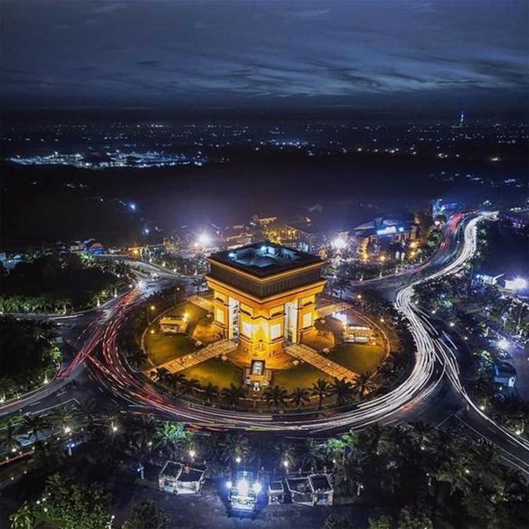

Kota Kediri (bahasa Jawa: Hanacaraka: ꦏꦝꦶꦫꦶ, Pegon: كاڎيريtranslit. Kadhiri; pengucapan bahasa Jawa: [kaˈɖiri]) adalah kota yang berada di Provinsi Jawa Timur, Indonesia. Kota ini terletak sekitar 120 km sebelah Barat Daya Kota Surabaya dan 100 km sebelah Barat Kota Malang, dan merupakan kota terbesar ketiga di provinsi Jawa Timur setelah Kota Surabaya dan Kota Malang menurut jumlah penduduk. Kota Kediri merupakan kota tertua yang ada di Jawa Timur. Kota Kediri memiliki luas wilayah 63,40 km² . dan seluruh wilayahnya merupakan enklave dari Kabupaten Kediri. Kota Kediri terbelah oleh Sungai Brantas yang membujur dari Selatan ke Utara sepanjang 7 kilometer. Berdasarkan data Badan Pusat Statistik Kota Kediri tahun 2025, penduduk kota ini berjumlah 301.424 jiwa.
Pada masa kolonialisme Hindia Belanda Kota Kediri merupakan bagian dari Kawedanan Kediri, Kawedanan Kediri mencakup wilayah Kota Kediri ditambah sebagian wilayah Kabupaten Kediri (meliputi Ngasem, Gampengrejo, Banyakan, Grogol, Tarokan, Mojo dan Semen).
Kota Kediri merupakan salah satu pusat produksi gula dan industri rokok terbesar di Indonesia.[5] Perusahaan rokok Gudang Garam berpusat di kota ini. Kota Kediri memiliki semboyan "Gagah Perkasa Djojo ing Bojo" maknanya "Mengalahkan Marabahaya".
Penduduk
| No | Jenis Kelamin | Jumlah |
|---|---|---|
| 1 | Laki-laki | 147.990 jiwa |
| 2 | Perempuan | 147.240 jiwa |
| 3 | Total | 301.200 jiwa |
Kecamatan
- Kota
- Mojoroto
- Pesantren
Gambar

